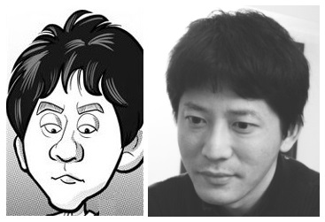

Hwann-Tzong Chen
|
Associate Professor Department of Computer Science National Tsing Hua University 101, Kuang Fu Road, Section 2 Hsing Chu, 300 Taiwan Office: 625 Delta Building Phone: +886-3-5731309 Email:  Lab: 741 & 742 Delta Building |

caricature by Joe Fu |
Research Interests
Computer Vision, Image Processing, Machine Learning
Teaching
- Fall 2019
-
Introduction to Programming II
Course materials on i2p-nthu github (in Chinese) - Computer Vision
- Previous Courses
- The Cutting Edge of Deep Learning: CEDL 2017, CEDL 2016
- Introduction to Programming: CS I2P-1 2018s CS I2P-1 2018 EECS I2P 2017, CS I2P-1 2017, EECS I2P 2016, CS I2P-1 2016, EECS 2015, CS I2P-1 2015, EECS 2014, CS I2P-1 2014, Online Course 2014, 2013, 2012, 2011, 2010, 2009, 2008, 2007, 2006
- Introduction to Programming (II): CS I2P-2 2018 CS I2P-2 2017 CS I2P-2 2016 CS I2P-2 2015
- Advanced Image Processing: 2012, 2011, 2010, 2009, 2008, 2007
- Statistical Learning Theory: 2013, 2011, 2010, 2009
- Graphical Models and Applications: 2013
- Computer Vision for Visual Effects: 2019 2018 2017 2016 2015 2014
- Fun Programming: 2015 2014
- Seminar in Information Systems and Applications: 2013s, 2012a, 2012s, 2011a, 2011s, 2010a, 2010s, 2009a, 2009s, 2008a, 2008s, 2007a
Publications
Journal
- Toward a Unified Scheme for Fast Interactive Segmentation
- Ding-Jie Chen, Hwann-Tzong Chen, and Long-Wen Chang
- Journal of Visual Communication and Image Representation, 2018 [link to final version]
- Interactive 1-bit Feedback Segmentation Using Transductive Inference
- Ding-Jie Chen, Hwann-Tzong Chen, and Long-Wen Chang
- Machine Vision and Applications, Online March 2018 [link to final version]
- Unsupervised Scene Segmentation Using Sparse Coding Context
- Yen-Cheng Liu and Hwann-Tzong Chen
- Machine Vision and Applications, Online December 2011 [ link to final version] [self-archiving]
- Tone Reproduction: A Perspective from Luminance-Driven Perceptual Grouping
- Hwann-Tzong Chen, Tyng-Luh Liu, and Chiou-Shann Fuh
- IJCV, October 2005
- Real-Time Tracking Using Trust-Region Methods
- Tyng-Luh Liu and Hwann-Tzong Chen
- PAMI, vol. 26, no. 3, pp. 397--402, March 2004, [pdf]
Conference, Workshop, arXiv
- One-Shot Object Detection with Co-Attention and Co-Excitation
- Ting-I Hsieh, Yi-Chen Lo, Hwann-Tzong Chen, and Tyng-Luh Liu
- NeurIPS 2019
- Point-to-Point Video Generation
- Tsun-Hsuang Wang, Yen-Chi Cheng, Chieh Hubert Lin, Hwann-Tzong Chen, and Min Sun
- ICCV 2019 arXiv:1904.02912
- COCO-GAN: Generation by Parts via Conditional Coordinating
- Chieh Hubert Lin, Chia-Che Chang , Yu-Sheng Chen, Da-Cheng Juan, Wei Wei, and Hwann-Tzong Chen
- ICCV 2019 arXiv:1904.00284
- See-through-Text Grouping for Referring Image Segmentation
- Ding-Jie Chen, Songhao Jia, Yi-Chen Lo, Hwann-Tzong Chen, and Tyng-Luh Liu
- ICCV 2019
- Learning Dense Correspondences for Video Objects
- Wen-Chi Chin, Zih-Jian Jhang, and Hwann-Tzong Chen
- ICIP 2019 [pdf]
- C2S2: Cost-aware Channel Sparse Selection for Progressive Network Pruning
- Chih-Yao Chiu, Hwann-Tzong Chen, and Tyng-Luh Liu
- arXiv:1904.03508
- HorizonNet: Learning Room Layout with 1D Representation and Pano Stretch Data Augmentation
- Cheng Sun, Chi-Wei Hsiao, Min Sun, and Hwann-Tzong Chen
- CVPR 2019 arXiv:1901.03861 [github]
- Instance-Level Meta Normalization
- Songhao Jia, Ding-Jie Chen, and Hwann-Tzong Chen
- CVPR 2019 arXiv:1904.03516 [github]
- SwipeCut: Interactive Segmentation with Diversified Seed Proposals
- Ding-Jie Chen, Hwann-Tzong Chen, and Long-Wen Chang
- arXiv:1812.07260 [cs.CV]
- Unsupervised Meta-learning of Figure-Ground Segmentation via Imitating Visual Effects
- Ding-Jie Chen, Jui-Ting Chien, Hwann-Tzong Chen, and Tyng-Luh Liu
- AAAI 2019 arXiv:1812.08442
- Attentive and Adversarial Learning for Video Summarization
- Tsu-Jui Fu, Shao-Heng Tai, and Hwann-Tzong Chen
- WACV 2019 [pdf] [github repo][project]
- Non-local RoI for Cross-Object Perception
- Shou-Yao Tseng, Hwann-Tzong Chen, Shao-Heng Tai, and Tyng-Luh Liu
- NeurIPS 2018 Workshop on Relational Representation Learning arXiv:1811.10002
- A2A: Attention to Attention Reasoning for Movie Question Answering
- Chao-Ning Liu, Ding-Jie Chen, Hwann-Tzong Chen, and Tyng-Luh Liu
- ACCV 2018 [pdf]
- Escaping from Collapsing Modes in a Constrained Space
- Chia-Che Chang, Chieh Hubert Lin, Da-Cheng Juan, Wei Wei, Che-Rung Lee, and Hwann-Tzong Chen
- ECCV 2018 [pdf]
- arXiv:1808.07258 [cs.LG] [BEGAN-CS github repo]
- Non-local RoIs for Instance Segmentation
- Shou-Yao Roy Tseng, Hwann-Tzong Chen, Shao-Heng Tai, and Tyng-Luh Liu
- arXiv:1807.05361 [cs.CV] [related github repo]
- Performance Evaluation of Age Estimation from T1-Weighted Images Using Brain Local Features and CNN
- Koichi Ito, Ryuichi Fujimoto, Tzu-Wei Huang, Hwann-Tzong Chen, Kai Wu, Kazunori Sato, Yasuyuki Taki, Hiroshi Fukuda, Takafumi Aoki
- EMBC 2018
- Tap and Shoot Segmentation
- Ding-Jie Chen, Jui-Ting Chien, Hwann-Tzong Chen, and Long-Wen Chang
- AAAI 2018 [pdf]
- Video Object Segmentation via Cellular Automata Refinement
- Ding-Jie Chen, Hwann-Tzong Chen, and Long-Wen Chang
- ACPR 2017 [pdf]
- Detecting Nonexistent Pedestrians
- Jui-Ting Chien, Chia-Jung Chou, Ding-Jie Chen, and Hwann-Tzong Chen
- [project] (ICCV Workshop CVRSUAD 2017)
- Self Adversarial Training for Human Pose Estimation
- Chia-Jung Chou, Jui-Ting Chien, and Hwann-Tzong Chen
- arXiv:1707.02439 [cs.CV] [code]
- Video Segmentation via Boundary-Aware Flow
- Ding-Jie Chen, Hwann-Tzong Chen, and Long-Wen Chang
- ICIP 2017 [pdf]
- Chess Recognition from a Single Depth Image
- Yu-An Wei, Tzu-Wei Huang, Hwann-Tzong Chen, and JenChi Liu
- ICME 2017 [pdf]
- Age Estimation from Brain MRI Images Using Deep Learning
- Tzu-Wei Huang, Hwann-Tzong Chen, Ryuichi Fujimoto, Koichi Ito, Kai Wu, Kazunori Sato, Yasuyuki Taki, Hiroshi Fukuda, and Takafumi Aoki
- ISBI 2017 [pdf]
- Quantitative Analysis of Automatic Image Cropping Algorithms: A Dataset and Comparative Study
- Yi-Ling Chen, Tzu-Wei Huang, Kai-Han Chang, Yu-Chen Tsai, Hwann-Tzong Chen, Bing-Yu Chen
- WACV 2017 [arXiv] [dataset]
- Object Discovery in Depth Images
- Yu-An Wei, Tzu-Wei Huang, Hwann-Tzong Chen, and JenChi Liu
- APSIPA 2016 [pdf]
- Interactive Segmentation from 1-Bit Feedback
- Ding-Jie Chen, Hwann-Tzong Chen, and Long-Wen Chang
- ACCV 2016 [pdf]
- Fast Defocus Map Estimation
- Ding-Jie Chen, Hwann-Tzong Chen, and Long-Wen Chang
- ICIP 2016 [pdf] [code]
- Transparent Texture Transfer
- Chan-Tai Yeh, Ting-Hui Tsai, and Hwann-Tzong Chen
- ICIP 2015 [pdf] [project]
- Example-Based Motion Manipulation
- Pin-Ching Su, Hwann-Tzong Chen, and Chia-Ming Cheng
- ICIP 2014 [pdf] [project]
- Random Decomposition Forests
- Chun-Han Chien and Hwann-Tzong Chen
- ACPR 2013 [pdf]
- Random Exemplar Hashing
- Tao-Yen Tang, Tzu-Wei Huang, and Hwann-Tzong Chen
- DDS 2013 [pdf] [code]
- Learning Sparse Dictionaries for Saliency Detection
- Karen Guo and Hwann-Tzong Chen
- APSIPA 2012 [pdf]
- Learning Feature Subspaces for Appearance-Based Bundle Adjustment
- Chia-Ming Cheng and Hwann-Tzong Chen
- ACCV 2012 [pdf]
- Video Object Cosegmentation
- Ding-Jie Chen, Hwann-Tzong Chen, and Long-Wen Chang
- ACM Multimedia 2012 [pdf]
- Translation-Invariant Scene Grouping
- Pin-Ching Su, Hwann-Tzong Chen, Koichi Ito, and Takafumi Aoki
- ACPR 2011 [pdf]
- Fusing Generic Objectness and Visual Saliency for Salient Object Detection
- Kai-Yueh Chang, Tyng-Luh Liu, Hwann-Tzong Chen, Shang-Hong Lai
- ICCV 2011 [pdf]
- Preattentive Co-Saliency Detection
- Hwann-Tzong Chen
- ICIP 2010 [pdf] [code]
- Probing the Local-Feature Space of Interest Points
- Wei-Ting Lee and Hwann-Tzong Chen
- ICIP 2010 [pdf]
- A Square-Root Sampling Approach to Fast Histogram-Based Search
- Huang-Wei Chang and Hwann-Tzong Chen
- CVPR 2010 [pdf] [code]
- Finding Good Composition in Panoramic Scenes
- Yuan-Yang Chang and Hwann-Tzong Chen
- ICCV 2009
- Landmark-Based Sparse Color Representations for Color Transfer
- Tzu-Wei Huang and Hwann-Tzong Chen
- ICCV 2009
- Histogram-based Interest Point Detectors
- Wei-Ting Lee and Hwann-Tzong Chen
- CVPR 2009 [pdf] [code]
- Finding Familiar Objects and Their Depth from a Single Image
- Hwann-Tzong Chen and Tyng-Luh Liu
- ICIP 2007
- Segmenting Highly Articulated Video Objects with Weak-Prior Random Forests
- Hwann-Tzong Chen, Tyng-Luh Liu, and Chiou-Shann Fuh
- ECCV 2006 [pdf]
- Semantic Manifold Learning for Image Retrieval
- Yen-Yu Lin, Tyng-Luh Liu, and Hwann-Tzong Chen
- ACM MM 2005 [pdf]
- Learning Effective Image Metrics from Few Pairwise Examples
- Hwann-Tzong Chen, Tyng-Luh Liu, and Chiou-Shann Fuh
- ICCV 2005 [pdf]
- Local Discriminant Embedding and Its Variants
- Hwann-Tzong Chen, Huang-Wei Chang, and Tyng-Luh Liu
- CVPR 2005 [pdf] [code]
- Tone Reproduction: A Perspective from Luminance-Driven Perceptual Grouping
- Hwann-Tzong Chen, Tyng-Luh Liu, and Tien-Lung Chang
- CVPR 2005 [pdf]
- Probabilistic Tracking with Adaptive Feature Selection
- Hwann-Tzong Chen, Tyng-Luh Liu, and Chiou-Shann Fuh
- ICPR 2004
- Probabilistic Tracking with Optimal Scale and Orientation Selection
- Hwann-Tzong Chen and Tyng-Luh Liu
- ICPR 2002
- Multi-Object Tracking Using Dynamical Graph Matching
- Hwann-Tzong Chen, Horng-Horng Lin, and Tyng-Luh Liu
- CVPR 2001 [pdf]
- Trust-Region Methods for Real-Time Tracking
- Hwann-Tzong Chen and Tyng-Luh Liu
- ICCV 2001 [pdf]
- A Variational Approach for Digital Watermarking
- Tyng-Luh Liu and Hwann-Tzong Chen
- ICIP 2000
Technical Report
- Color Constancy with Faces
- Jiun-Hung Chen and Hwann-Tzong Chen
- Technical Report 2011-09-01
Students
Last updated: 31 December 2018
BN2ZN